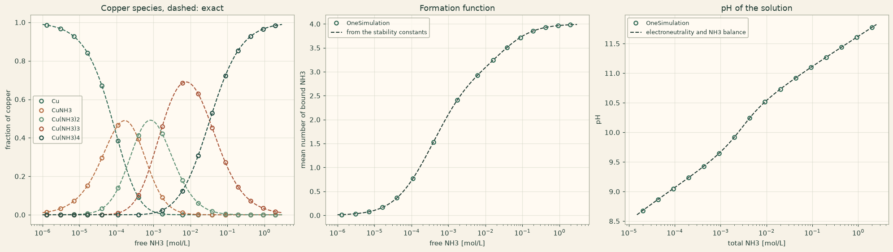

Docs › Examples › Acid-base equilibria and copper speciation in ammonia
Chemical equilibrium · 0D
Acid-base equilibria and copper speciation in ammonia
Copper sulfate in ammonia solutions from 0.02 mmol/L to 2 mol/L: the four ammine complexes, the free ammonia and the pH of the solution.

What it computes
OneSimulation integrates eight reversible pairs of mass-action reactions (four complexation steps, ammonia protonation and water self-ionisation, with nearly diffusion-limited proton transfer) with the implicit Euler method and Newton's method until every equilibrium balances.
What it checks
Free ammonia, pH and all copper fractions agree with the equilibrium solved from the stability constants to 6e-11 or better, and copper and ammonia are conserved to 2e-14; the tetraammine complex reaches 98 % of the copper in 2 mol/L ammonia at pH 11.8.
The notebook
The complete notebook, cell by cell. Run it to produce the figures and the comparison printout.
Cupric ions bind up to four ammonia molecules and form the deep blue tetraammine complex. The complexes form step by step,
while ammonia is a weak base and water ionises,
Every equilibrium is written as a pair of mass-action reactions whose rate constants have the ratio of the equilibrium constant, and the well-mixed solution (0D) is integrated with the implicit Euler method until all reactions balance. Hydroxo complexes and the precipitation of copper hydroxide at low ammonia content are left out.
Reference. Stability constants at 25 °C: \(\log K_n = 4.04,\ 3.43,\ 2.80,\ 1.48\) (Martell & Smith, Critical Stability Constants, vol. 4), \(\mathrm pK_a = 9.25\), \(\mathrm pK_w = 14.00\). With the cumulative constants \(\beta_n=K_1\cdots K_n\) the fraction of copper in complex \(n\) at the free ammonia concentration \(L\) is
For copper sulfate in ammonia, electroneutrality gives \([\mathrm{H^+}]=\sqrt{K_w/(1+L/K_a)}\), and the ammonia balance \(N_T = L\,(1+[\mathrm{H^+}]/K_a) + \mathrm{Cu}_T\,\bar n(L)\) fixes \(L\); it is solved here independently with a root finder.
import numpy as np
from onesim.cad.geometry import LumpedDomain
from onesim.meshing import LumpedMesh
from onesim.numerics import Numerics
from onesim.numerics.discretization import LumpedParameters
from onesim.numerics.linear import SparseDirect
from onesim.numerics.nonlinear import Newton
from onesim.numerics.time import BackwardEuler
from onesim.physics.chemistry import (
ReactionIR,
ReactionKinetics,
ReactionNetworkIR,
SpeciesIR,
)
from onesim.simulation import Problem, Simulation
from onesim.simulation.initial_conditions import InitialValue
from onesim.visualization import plots, theme
from scipy.optimize import brentq
theme.set()Reaction network
Concentrations are in mol/m³ (= mmol/L), so the constants in L/mol are divided by 1000. The complexation steps bind with \(k=1\) m³/(mol s); the proton transfers are nearly diffusion-limited, \(10^8\) m³/(mol s) (Eigen, 1964), which makes the system very stiff, a task for the implicit integrator.
complexes = ["Cu", "CuNH3", "Cu(NH3)2", "Cu(NH3)3", "Cu(NH3)4"]
log_K = (4.04, 3.43, 2.80, 1.48)
Ka, Kw, fast = 10**-9.25 * 1e3, 1e-14 * 1e6, 1e8
reactions = [
ReactionIR(name, reactants, products, {"kind": "constant", "value": k})
for n, lk in enumerate(log_K, 1)
for name, reactants, products, k in (
(f"bind_{n}", {complexes[n - 1]: 1, "NH3": 1}, {complexes[n]: 1}, 1.0),
(
f"release_{n}",
{complexes[n]: 1},
{complexes[n - 1]: 1, "NH3": 1},
1e3 / 10**lk,
),
)
]
reactions += [
ReactionIR(
"deprotonation",
{"NH4": 1},
{"NH3": 1, "H": 1},
{"kind": "constant", "value": fast * Ka},
),
ReactionIR(
"protonation",
{"NH3": 1, "H": 1},
{"NH4": 1},
{"kind": "constant", "value": fast},
),
ReactionIR(
"self_ionisation",
{},
{"H": 1, "OH": 1},
{"kind": "constant", "value": fast * Kw},
),
ReactionIR(
"neutralisation", {"H": 1, "OH": 1}, {}, {"kind": "constant", "value": fast}
),
]
species = complexes + ["NH3", "NH4", "H", "OH"]
network = ReactionNetworkIR(
"copper_ammine",
"1",
species=tuple(SpeciesIR(name, 0, 1e-25) for name in species),
reactions=tuple(reactions),
strict_balance=False,
)Titration series
One millimole per litre of copper sulfate in ammonia solutions from 0.02 mmol/L to 2 mol/L. Each solution starts with all ammonia free and neutral water, and runs for 300 s in 150 implicit steps, far beyond the slowest release time \(1/k_{-4}\).
domain = LumpedDomain()
copper = 1.0
ammonia = np.geomspace(0.02, 2000.0, 16)
models = [ReactionKinetics(domain=domain.system, network=network) for _ in ammonia]
numerics = Numerics(
spatial=LumpedParameters(),
time_integrator=BackwardEuler(),
nonlinear_solver=Newton(
linear_solver=SparseDirect(),
jacobian="analytic",
absolute_tolerance=1e-12,
relative_tolerance=1e-10,
),
)
runs = [
Simulation(
problem=Problem(
name=f"copper in {total:.1f} mM ammonia",
geometry=domain,
physics=(model,),
initial_conditions=tuple(
InitialValue(model.concentration(name), value)
for name, value in {
**dict.fromkeys(species, 0.0),
"Cu": copper,
"NH3": total,
"H": 1e-4,
"OH": 1e-4,
}.items()
),
),
mesh=LumpedMesh(domain),
numerics=numerics,
).run(start_time=0.0, end_time=300.0, time_step=2.0)
for model, total in zip(models, ammonia)
]
final = {
name: np.array(
[
run.field(model.concentration(name)).values[0]
for run, model in zip(runs, models)
]
)
for name in species
}Comparison with the equilibrium
Free ammonia and pH of every solution against the root of the ammonia balance, and the copper fractions against \(\alpha_n\) at the simulated free ammonia.
beta = np.cumprod([1.0] + [10**lk / 1e3 for lk in log_K])
alpha = lambda L: beta * L ** np.arange(5) / np.sum(beta * L ** np.arange(5))
free_ammonia = lambda total: brentq(
lambda L: L * (1 + np.sqrt(Kw / (1 + L / Ka)) / Ka)
+ copper * alpha(L) @ np.arange(5)
- total,
1e-12,
total,
)
free = np.array([free_ammonia(total) for total in ammonia])
pH = -np.log10(final["H"] / 1e3)
pH_reference = -np.log10(np.sqrt(Kw / (1 + free / Ka)) / 1e3)
fractions = np.array(
[[final[name][i] / copper for name in complexes] for i in range(len(ammonia))]
)
print(
f"largest relative deviation of free NH3 from the equilibrium: {np.max(np.abs(final['NH3'] / free - 1)):.1e}"
)
print(f"largest deviation of pH: {np.max(np.abs(pH - pH_reference)):.1e}")
print(
f"largest deviation of a copper fraction from alpha_n: {np.max(np.abs(fractions - np.array([alpha(L) for L in final['NH3']]))):.1e}"
)
print(
f"copper and ammonia balances: {np.max(np.abs(fractions.sum(axis=1) - 1)):.1e}, "
f"{np.max(np.abs(final['NH3'] + final['NH4'] + fractions @ np.arange(5) * copper - ammonia) / ammonia):.1e}"
)
for total, L, p, row in list(zip(ammonia, final["NH3"], pH, fractions))[::2]:
print(
f"total NH3 {total:8.2f} mM: free {L:8.3f} mM, pH {p:5.2f}, fractions "
+ " ".join(f"{value:.3f}" for value in row)
)Figure
The species distribution over the free ammonia concentration, Bjerrum's formation function and the pH of the solution over the total ammonia.
L_line = np.geomspace(1e-3, 3e3, 300)
alpha_line = np.array([alpha(L) for L in L_line])
total_line = np.geomspace(0.015, 2500, 200)
free_line = np.array([free_ammonia(total) for total in total_line])
fig = plots.figure(1, 3, size=(18, 5))
plots.line(
points={
name: (final["NH3"] / 1e3, fractions[:, n]) for n, name in enumerate(complexes)
},
reference={
name: (L_line / 1e3, alpha_line[:, n]) for n, name in enumerate(complexes)
},
scale="logx",
xlabel="free NH3 [mol/L]",
ylabel="fraction of copper",
title="Copper species, dashed: exact",
legend="center left",
ax=fig[0],
)
plots.line(
points={"OneSimulation": (final["NH3"] / 1e3, fractions @ np.arange(5))},
reference={
"from the stability constants": (L_line / 1e3, alpha_line @ np.arange(5))
},
scale="logx",
xlabel="free NH3 [mol/L]",
ylabel="mean number of bound NH3",
title="Formation function",
legend="upper left",
ax=fig[1],
)
plots.line(
points={"OneSimulation": (ammonia / 1e3, pH)},
reference={
"electroneutrality and NH3 balance": (
total_line / 1e3,
-np.log10(np.sqrt(Kw / (1 + free_line / Ka)) / 1e3),
)
},
scale="logx",
xlabel="total NH3 [mol/L]",
ylabel="pH",
title="pH of the solution",
legend="upper left",
ax=fig[2],
)
plots.show()Going further
Add ammonium sulfate to buffer the solution and watch the complexes shift to lower \(n\) at the same total ammonia. Add the hydroxo complex \(\mathrm{CuOH^+}\) as another reversible pair, or replace the constant rate pairs by reversible reactions with species thermochemistry to obtain the temperature dependence of the stability constants.